Type added
Charmeleon to Charizard
Fire
XPLv. 36
 Charizard
CharizardFireFlying
Evolution Lab
Follow familiar evolution lines first, then move into branching paths, Eevee's eight outcomes, and the regional forms that rewrite what an evolution family can become.
Basic Only
These Pokemon are represented as Basic cards without a Stage 1 destination. Legendary and Mythical Pokemon appear here by card stage; their larger story can live on its own page later.
Basic to Stage 1
A Basic Pokemon becomes one Stage 1 Pokemon. Change the specimen to compare another line.
Basic to Stage 2
Move through each TCG stage independently, or change the family and start again from its Basic Pokemon.
Fossil Restore and Strange Combinations
Fossil Pokemon are a TCG exception: the restored Pokemon is commonly a Stage 1 evolving from a Fossil Item. Galar's Rare Fossil goes further, pairing two unrelated halves into one strange combination.
Baby Pokemon
Baby Pokemon are their own card stage. Their families continue through a Basic Pokemon and, when applicable, a Stage 1 or branching outcome. Breeding interactions will be covered in a future version.
Unusual Evolution Paths
Gen I first: evolution can rewrite a Pokemon's type, split one family into several outcomes, or add a new method entirely.
Charizard Butterfree
Butterfree Dewgong
Dewgong
 Cloyster
Cloyster Forretress
Forretress Leaf Stone
Leaf Stone Sun StoneWater Stone
Sun StoneWater Stone King's Rock
King's Rock
 Scizor
Scizor
 Kingdra
Kingdra Combusken
Combusken Marshtomp
Marshtomp Wurmple
Wurmple SilcoonOdd value
SilcoonOdd value CascoonEven value
CascoonEven value Deep Sea Tooth
Deep Sea Tooth Deep Sea Scale
Deep Sea Scale Nincada
Nincada Ninjask
Ninjask Shedinja
Shedinja Masquerain
Masquerain Breloom
Breloom Salamence
Salamence
 Torterra
Torterra Monferno
Monferno Empoleon
Empoleon Bibarel
Bibarel
 Froslass
Froslass Pignite
Pignite Palpitoad
Palpitoad
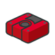
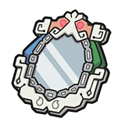
Reveal Glass⇄

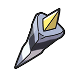
DNA Splicers Chesnaught
Chesnaught Delphox
Delphox Greninja
Greninja Diggersby
Diggersby Fletchinder
Fletchinder Dragalge
DragalgeAt Level 12, Spewpa evolves into Vivillon. Its wing pattern is determined by the trainer's geographic region.
 Spewpa
Spewpa Vivillon
Vivillon
 Female Pyroar
Female Pyroar Female Meowstic
Female MeowsticEach Pumpkaboo size keeps its size when traded into the matching Gourgeist form. Both are Ghost / Grass.
 Trade
Trade Trade
Trade
 Trade
Trade
 Trade
Trade
Power Construct lets Zygarde assemble different forms from Cells and Cores.
 10% FormeCell assembly
10% FormeCell assembly 50% FormeBase form
50% FormeBase form Complete FormeFull assembly
Complete FormeFull assembly Pangoro
Pangoro Malamar
Malamar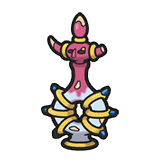
 Hoopa Unbound
Hoopa Unbound Alolan Vulpix
Alolan Vulpix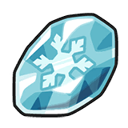
 Alolan Ninetales
Alolan Ninetales Alolan Sandshrew
Alolan Sandshrew Alolan Sandslash
Alolan Sandslash Crabominable
CrabominableAt Level 25, time of day determines the form. Dusk Form requires Rockruff's Own Tempo ability.
 Rockruff
Rockruff Midday Lycanroc
Midday LycanrocCosmoem evolves at Level 53; the game version determines the legendary outcome.
Start with original Necrozma, then choose one of its three Gen VII transformations.

High friendship evolves Type: Null into Normal-type Silvally. Equipping a Memory then changes Silvally's type and form.
 Type: NullHigh friendship
Type: NullHigh friendship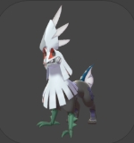
Silvally Galarica Cuff
Galarica Cuff Galarian Slowpoke
Galarian Slowpoke Galarica Wreath
Galarica Wreath Galarian SlowbroPoison / Psychic
Galarian SlowbroPoison / Psychic Galarian SlowkingPoison / Psychic
Galarian SlowkingPoison / Psychic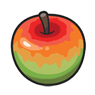
Tart Apple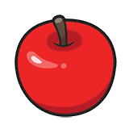
Sweet Apple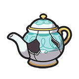
Cracked Pot SinisteaGhost
SinisteaGhost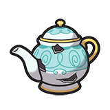
Chipped Pot PolteageistPhony form
PolteageistPhony form PolteageistAntique form
PolteageistAntique form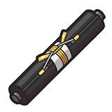
Scroll of Darkness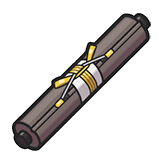
Scroll of Waters Rapid StrikeFighting / Water
Rapid StrikeFighting / Water Galarian YamaskGround / Ghost
Galarian YamaskGround / Ghost RunerigusGround / Ghost
RunerigusGround / GhostLand three critical hits in one battle.
 Galarian Farfetch'dFighting
Galarian Farfetch'dFighting Sirfetch'dFighting
Sirfetch'dFighting Galarian LinooneDark / Normal
Galarian LinooneDark / Normal ObstagoonDark / Normal
ObstagoonDark / Normal Galarian DarumakaIce
Galarian DarumakaIce Galarian DarmanitanIce
Galarian DarmanitanIce Galarian CorsolaGhost
Galarian CorsolaGhost CursolaGhost
CursolaGhost Galarian Mr. MimeIce / Psychic
Galarian Mr. MimeIce / Psychic Mr. RimeIce / Psychic
Mr. RimeIce / Psychic ScytherBug / Flying
ScytherBug / Flying
 KleavorBug / Rock
KleavorBug / Rock UrsaringNormal
UrsaringNormal Full Moon
Full Moon UrsalunaGround / Normal
UrsalunaGround / Normal StantlerNormal
StantlerNormal WyrdeerNormal / Psychic
WyrdeerNormal / Psychic BasculinWater
BasculinWater BasculegionWater / Ghost
BasculegionWater / Ghost Hisuian QwilfishDark / Poison
Hisuian QwilfishDark / Poison OverqwilDark / Poison
OverqwilDark / Poison Hisuian SneaselFighting / Poison
Hisuian SneaselFighting / Poison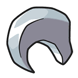
 SneaslerFighting / Poison
SneaslerFighting / Poison Hisuian VoltorbElectric / Grass
Hisuian VoltorbElectric / Grass Hisuian ElectrodeElectric / Grass
Hisuian ElectrodeElectric / Grass PetililGrass
PetililGrass Hisuian LilligantGrass / Fighting
Hisuian LilligantGrass / FightingLechonk evolves at Level 18; gender determines the Oinkologne form.
 OinkologneFemale
OinkologneFemale OinkologneMale
OinkologneMale CapsakidGrass
CapsakidGrass ScovillainGrass / Fire
ScovillainGrass / Fire PrimeapeFighting
PrimeapeFighting AnnihilapeFighting / Ghost
AnnihilapeFighting / Ghost PawmoElectric / Fighting
PawmoElectric / Fighting PawmotElectric / Fighting
PawmotElectric / Fighting BramblinGrass / Ghost
BramblinGrass / Ghost BrambleghastGrass / Ghost
BrambleghastGrass / Ghost FinizenWater
FinizenWater PalafinWater
PalafinWater GimmighoulGhost
GimmighoulGhost GholdengoSteel / Ghost
GholdengoSteel / Ghost BisharpDark / Steel
BisharpDark / Steel
 KingambitDark / Steel
KingambitDark / Steel GirafarigNormal / Psychic
GirafarigNormal / Psychic FarigirafNormal / Psychic
FarigirafNormal / PsychicAt Level 25, the family can appear with either three or four members.

 Auspicious Armor
Auspicious Armor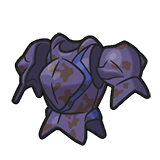
Malicious Armor ApplinGrass / Dragon
ApplinGrass / Dragon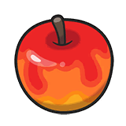
 DipplinGrass / Dragon
DipplinGrass / Dragon PoltchageistGrass / Ghost
PoltchageistGrass / Ghost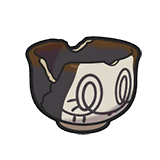
 SinistchaGrass / Ghost
SinistchaGrass / Ghost DuraludonSteel / Dragon
DuraludonSteel / Dragon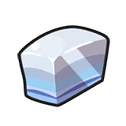
 ArchaludonSteel / Dragon
ArchaludonSteel / Dragon RellorBug
RellorBug RabscaBug / Psychic
RabscaBug / PsychicTerapagos changes form during the Indigo Disk's Terastal phenomenon.

Evolution Lab
Eevee's evolution family spans stones, friendship, time, location, and type-specific conditions. Partner Eevee is the exception that stays exactly as it is.
Evolution Lab
Spin with a Sweet equipped to create Alcremie. Direction, duration, time of day, and the Sweet all shape the result.
 MilceryHold a Sweet
MilceryHold a Sweet Vanilla CreamStrawberry SweetClockwise, quick, day
Vanilla CreamStrawberry SweetClockwise, quick, dayRegional Evolution
Regional forms can change typing and appearance; some unlock an evolution the original form never had.